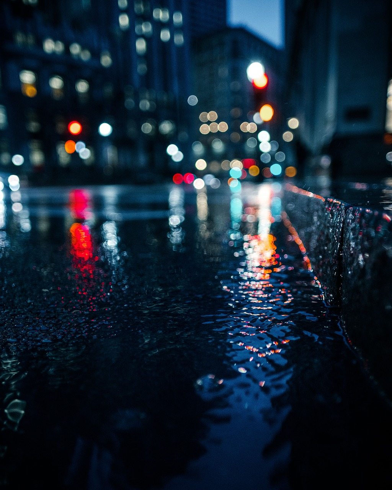
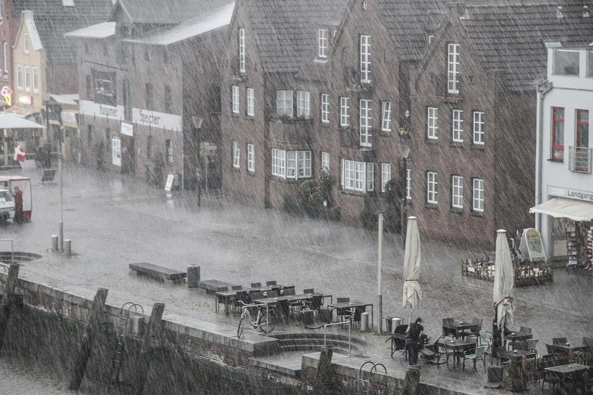
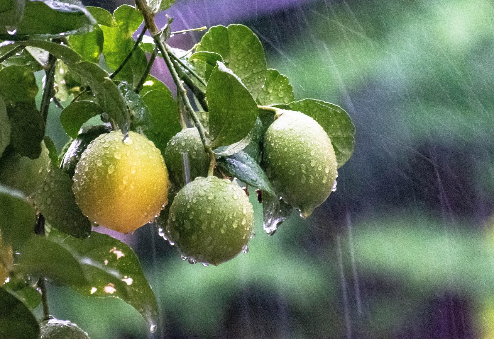
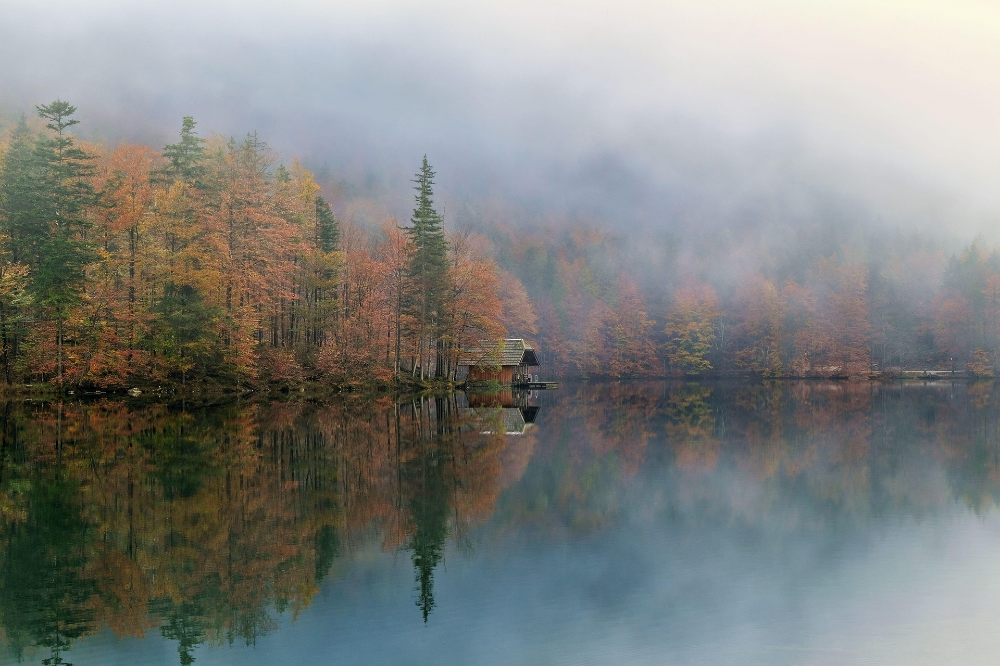

Días lluviosos
La ciudad se vuelve poesía cuando llueve y no tengo prisa.

Ah traves de la ventana
"Ver como descienden las gotas condensadas en el vidrio da unos instantes de despeja la mente, mientras un suspiro abandona el cuerpo, creando alivio..."

Reflejos en el asfalto
"La ciudad mojada parece un cuadro impresionista. Las luces desenfocadas y los reflejos en los charcos de agua crean una sensacion de sumergimiento en los pensamientos mientras evades el caos."

La tormenta
"A veces el hecho de que llueva lo interpetamos a como fue nuestro dia, es como si no tuvieras paraguas, para alguien es un mal momento por no llevar con que cubrir mientras en un lugar seguro o con eleccion es un buen momento."

El fruto
"Lo que hoy es un fruto ,ayer fue flor que llego a su estado correcto tras haber pasado por la lluvia"

Entre brumas
"Un momento de quietud, en donde el agua actua como un espejo perfecto, evocando paz pero sobre todo permite llegar a una reflexión interna."